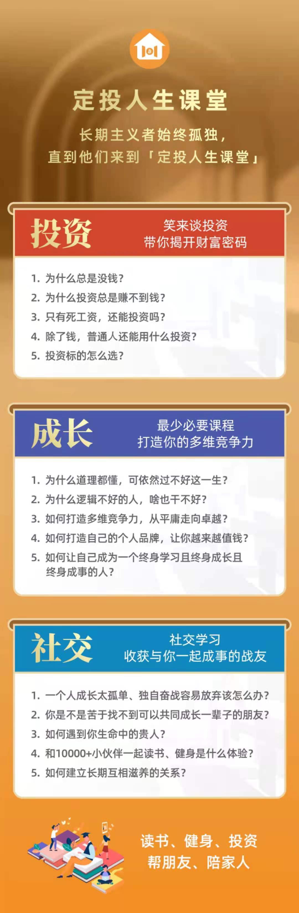
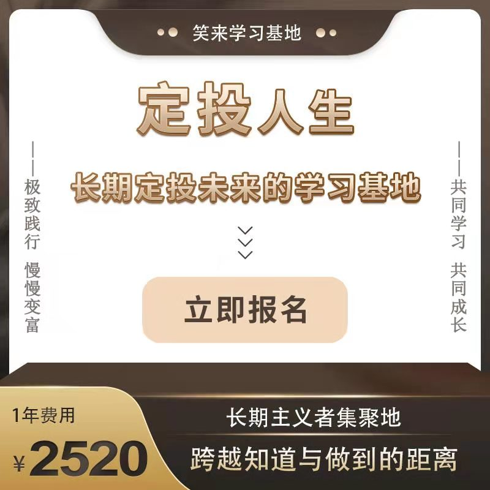

销售对现在的每个人来说是必备的技能之一，无论是在生活中，工作上，事业上都是必不可少的，小到一次谈话，大到商业合作，无处不在。
不过对于农耕文化根深蒂固的我们来说，销售存在巨大的障碍和卡点，一方面轻商，另一方面又习而不得，很是矛盾。
在定投人生课堂 中，销售是必会的场外赚钱能力，我有幸参加第二期的销售训练营活动，并且实现了销售从 0 到 1 的突破。在第三其销售训练营中，作为副教练，帮助大家实现销售的突破，为了调动大家参与销售的积极性，在定投人生课堂的115帮做了一次关于销售的分享，以下是分享内容，期望对你有所启发。
从 0 到 1，自然而然
115班的战友们大家晚上好，我是第三期销售训练营311班的副教练李晓飞，特别感谢运营组，给我这个机会，让我给大家分享一下我对销售的理解和认识。今天我分享的主题是：从0到1 自然而然。想要表达的意思是，对于销售这件事情来说，和其他事情一样，是一个自然而然的过程。
我的销售障碍
如果说我有什么障碍，我觉得最大的障碍就是销售了，至少在很长的时间里，我是这么认为的，也许这和我的工作有关系，我是一个技术人员，平时多和程序打交道，无论如何复杂的业务流程，多么抽象的数据结构，对我来说如履平地，但对和人打交道，特别是更高级的交流方式——销售，对我来说就好像在另一个平行宇宙里，毫无感知。
虽然如此，在进入定投人生课堂之后，特别是了解了持续场外赚钱能力的重要性之后，还是想要实现自己的销售突破的。为此读了很多关于销售的书，看了很多销售案例，也尝试在朋友圈里做宣传，可惜没有任何效果，入群一年多，畅想过无数次实现销售的场景，但是都只是空想。
我的销售卡点
等回过头来，看过往，我才发现，其实自己把销售看得太特殊了，不敢相信销售是可以像其他事情一样有法可依，而自己一直以来陷入了很多卡点之中。那么主要卡点有哪些呢？
第一个：不敢去销售
销售除了和人打交道之外，更重要的是需要将产品卖出去，也就是要从别人那里收来钱，这实在是太难了。
和别人说个话都感觉到困难，怎么能从别人那里获得钱呢？很多时候我宁可白送也不愿意去要钱，我相信很多人和我一样有这样的想法。
比这更难的是，一个固有的观念——谈钱伤感情。
如果说能销售出去的话，一定是对方相信自己，是自己的熟人甚至是朋友，怎么好意思谈钱呢。但自己又不能不要，那么还不如不去销售。
对于不敢销售还有一点就是 担心被拒绝。我们作为社会性动物都有期望被认同的需求，销售本身是一个需要不断尝试的过程，转化率 10% 都算很高了，意味着十有八九都是要面临被拒绝的，好不容易鼓起勇气，结果被拒绝了，特别伤自尊，便没有了尝试的勇气，只想放弃。
不敢去销售的卡点，导致我虽然看了很多销售的书，但没有做深入实践。
第二个：产品认知偏差
定投人生课堂，虽然是绝佳的销售标的，但是没有对它的有充分的认识，只把它动作一种投机工具（没错就是投机）。
期望在这里很快赚到钱，而实际情况是，赚钱的过程需要很久（至少两个大周期），那么如何去向别人说这个事情呢？
因为自己想的是快速赚钱，那么能想到的卖点一定是快速赚钱，这就和实际的销售标的发生冲突，在销售中一旦遇到对方问多长时间可以赚到钱时就哑口无言了。
第三个：没有充足的准备
对于销售来说，除了对产品足够了解之外，需要有充足的准备，比如产品介绍，宣传海报，客户案例，优秀分享等，在推广时能起到如虎添翼的效果。
这些材料需要持续的准备，并对材料分门别类，建立方便调取的存储方式，还要及时更新。
比如 定投人生课堂 之前叫 BOX定投践行群，更名后相关海报、材料需要更新。
这些功夫在平时的工作我并没有做好，一旦有了销售机会，无法及时有效的为客户提供，就会造成巨大的销售阻力和压力，从而加重了销售上的畏难情绪。
第四个：不切实际的幻想
这一点也与对销售的认识有关。在不会销售之前，对销售有种臆想，这些臆想来源于平时对销售不严谨的感知。
比如认为销售就是搞关系、销售就是欺骗、销售必须靠天赋、销售是风风火火的过程等。
这些认识不但无法让自己实现销售，而且还 阻碍了自己学习正确的销售方式，建立正确的销售认知。
这个卡点看似很容易识别，其实不容易感知到，因为它是认知本身，就好比一直在一个污染的环境里，从来不知道清新的环境是什么样子，正如：夏虫不可以语冰。
问题之树
除了这些卡点，还是无数个由它们引出的其他问题，就如笑来老师所说的问题之树， 我面对我的问题之树想出了无数 “解决方案”，每天花大量的时间和精力做着徒劳无益的事情。
面对这些问题，不是不知道如何解决，就是意识不到要去解决。对于销售只感觉自己心有余而力不足。如果没有定投人生课堂里的销售训练营，今天我的故事只能到此结束了。
幸运之光
幸运的是，在第一期写作训练营中战友 许小暖 的邀请下，加入了第二期销售训练营。
那时我还没有销售过一张门票，虽然不太认为销售训练营能帮助自己突破销售，但还是抱着试试看的态度，加入了。
而这却成了我人生的分水岭——让我实现的销售从零到一的突破。
成长与突破
现在回头来看，我在销售训练营中，获得以下几点的成长和突破
第一个：不再惧怕销售
在训练营中，小暖教练帮我打通了惧怕销售的卡点。
首先并不是需要去销售迎合别人的东西，而是要销售对别人真实有用的东西，对于不切实际的承诺，和过度的宣传，即使成单，也会损伤自己的信用。
小暖教练说，她所销售的任何东西一定是自己完全认可的，不会损害自己信用的，因为信用是能做持续销售的基础。
然后将短期获利的视角，调整为持续成长，定投课堂的价值在于帮助成员成长，提升认知，而获利是这些基础提升后的结果，正可谓： 你永远赚不到超过你认知范围以外的钱。
最后，销售并不一定是需要每个人都买才算成功，也并不是说必须有成单才算销售，既然这个产品自己认可，向别人介绍就是在做好事，即使别人可能不卖，也有必要向其说明产品的概况。
明白了些后，就不再惧怕销售了，后面的销售活动就没有之前那么大的压力了。
第二个：销售有法可依
在训练营里，提供了很多销售相关的课程，都是定投课堂里销售业绩很好的战友，根据自己的实践总结出来的。
比如 Jenny 的《打造个人品牌》，刘客的《我眼中的践行群》，Galaxy的《开启优雅的销售》等等，
让我看到了原来门票可以这么销售，践行群有这么好的买点等等，而且也认识到遵从这些销售方法的重要性，笑来老师说过，存在可以盲从的投资建议，而直到现在我才有所感悟。
第三个：销售就是做个好人
在训练营里，小暖教练现身说法，通过自己如何将价值 一万五千八 的课程销售60个陌生人，展示 如何客观地真实地介绍 产品，做销售的。
其实销售并不是坑蒙拐骗，而是 将好的产品推荐给需要的人，帮助他们获得更好的生活。
另外销售需要实事求是，不做过度宣传，认真替客户着想，了解他们的问题，解答他们的疑惑，特别对于产品中不存在的特点不要做承诺。
我的一位客户，在向他介绍时，正是因为客观的说明打动了他，有什么就是说什么，存在什么问题不要刻意回避，不要为了销售而销售，我们的最终目的就是要帮助他人。
第四个：共同进步的环境很重要
参加了第二期销售训练营之后的两个月里，我并没有再实现销售，很重要的一个原因就是 缺少共同进步的氛围。
当一个人单打独斗时，很容易妥协，比如每天发一个朋友圈，每天和至少一个人聊天很简单吧，但是如果没有环境的约束和督促，而且这样简单的事情还没有形成习惯时，很容易会因为各种各样的原因放弃，比如要上班了、孩子影响了、身体不舒服了，时间太晚了，等会儿再吧 等等。
这样一次两次，很快就坚持不了了。而在训练营，可以营造共同进步的气氛，大家相互鼓励，相互促进，相互学习，相互交流，只要在销售的事情上没有卡点，简直就像坐上高速列车，让自己不由自主地快速成长。
而销售卡点的突破，正是销售训练营的主旨之一。
第五个：销售是积累的过程
如果总想着销售就是一蹴而就，那么永远也找不到销售之门，只会在寻找捷径的路上。而任何有价值的事情，都是需要找对方向，认认真真做很久才有效果。
销售的过程完全也是一样的，不断地宣传，不断地向别人推荐，不断地找到销售点，慢慢地积累信任度，提升影响力，展示效果等等。
在训练营期间，发朋友圈和找人聊天是一个必不可少的销售活动，朋友圈可以让大家看到自己所做的事情，不断地加深大家对产品的印象，同时在聊天时能更顺畅的带入产品话题。
而这些事情并不是做一两次就有效果，也不是推广一次就能天下人皆知。
从这一点上看，销售就是持续不断地重复和积累，而它产生的效果确实巨大的。
什么最为持久的呢，那就是自然而然，将持续的努力变为习惯，就像定投，而结果会自然而然地到来。我的另一位客户，就是因为我在朋友圈里对定投课堂的价值观的不断宣传和践行而成交的。
有爱的销售训练营
训练营里的每个班教练、组长都是热心、有爱、能力强悍的， 为了大家提供优质的服务和切实的帮助，极力渴望帮助每位战友实现销售——这个至关重要能力的突破与提升。
因此，当第三期销售训练营开启的时候，我立即选择再次加入，哪怕押金提高到了10个box。
不仅加入，还在小暖教练的邀请下，还做了销售训练营311班的副教练，自己提高的同时，帮助更多的战友共同成长。
第三期销售训练营
那么第三期销售训练营有什么特点呢？
- 有12个教练组成的12个班级。每班有精心挑选的2位教练和5位组长，提供陪伴式成长服务。
- 有每日销售微动作：加一位微信好友，发一次朋友圈。对与发圈困难的同学，我们还有发圈的参考文案，供你选择参考，甚至直接搬运。
- 出现各种问题的时候，组长教练会帮助解答。再次行动后，新问题再次解答纠正。在这个过程中，可以帮助大家解决，在销售过程中所有的纠结、困难和卡点。
为了鼓励大家实现销售突破，这次训练营的报名和规则做了一些调整，具体调整如下：
- 报名时间 自7月23日0点 至 7月27日 23点，也就是截止到下周二；
- 报名条件是自报名之日起、入定投课堂满2个月的学员，并且需缴纳 10个BOX 作为押金；
- 对于参加了第二期销售训练营，但最终没有返还押金的学员，可以免费参与第三期销售训练营的复训，并有机会赚回上期押金；
- 押金如何返还呢？只要在训练营期间以及结束后一个月之内完成一张门票销售，即可返还全部押金，即有效销售期限延长至两个月；
- 考虑到很多战友初次接触销售，同时销售是个持续积累的过程，只要在训练营期间完成全部打卡任务，即使没有销售出门票，也可以获得5个box的押金返还，因为我们相信只要你持续积累了为了一定能突破销售，这是个自然而然地过程。
如何加入训练营呢？
在新生app 或者 mixin message 中搜索 7000103866，支付押金，入群即可
注意：二期复训的战友支付时记得选择免押金优惠券
最后，如果要说一句话来推荐销售训练营的话，我会说：
销售训练营是成长的火箭推进器。
我在销售训练营等你，期待与你一起实现销售梦想！
我的分享到此结束，感谢大家的时间，谢谢。
定投人生课堂是最好的销售标的
为啥呢？ 因为……


如何加入：